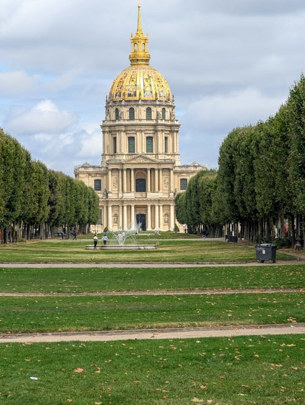
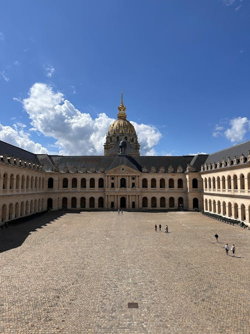
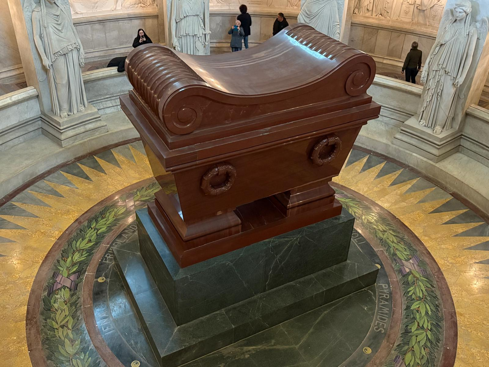
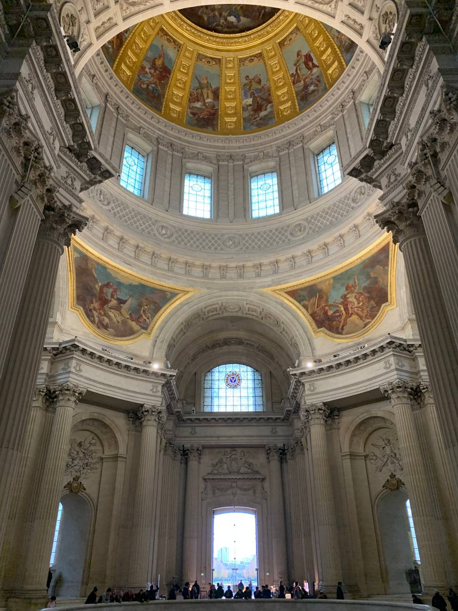
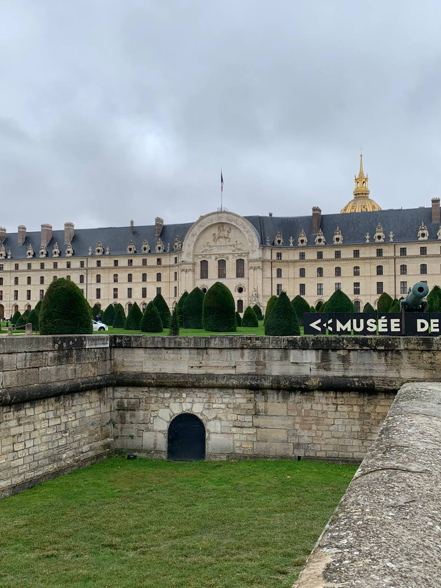
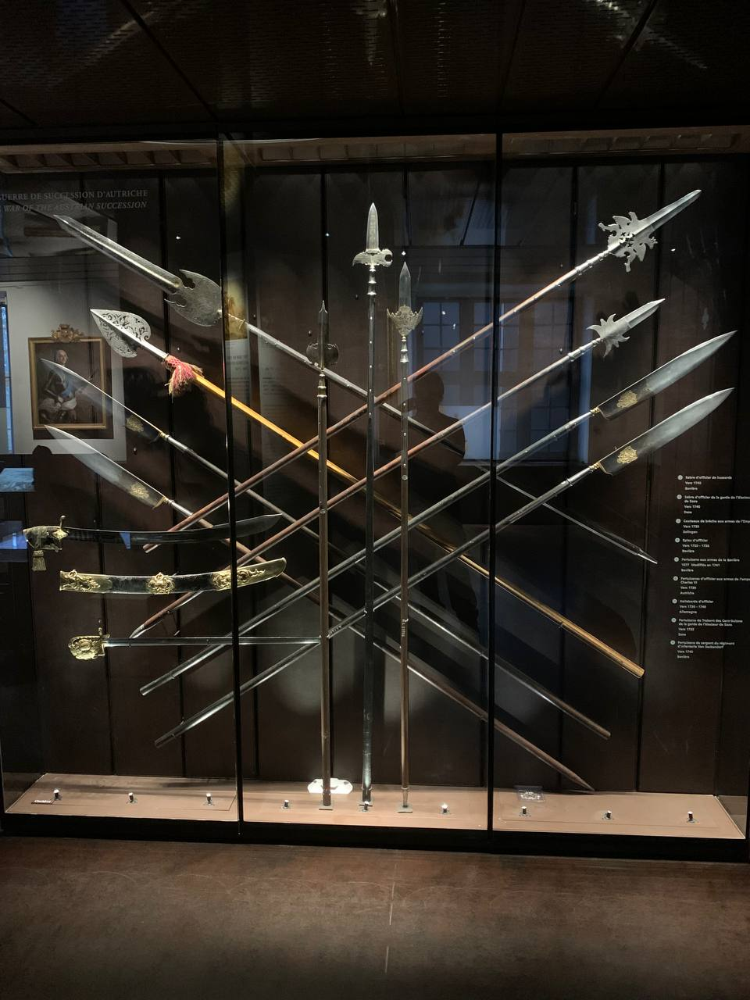
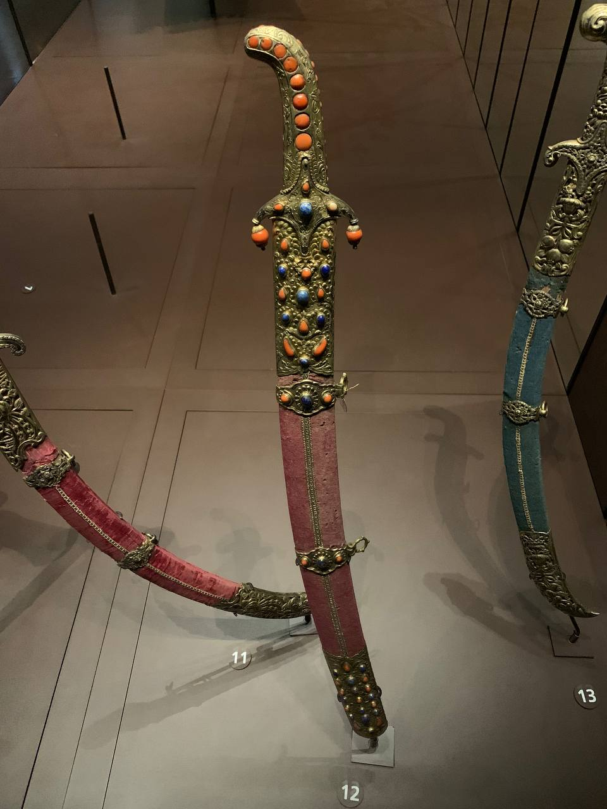
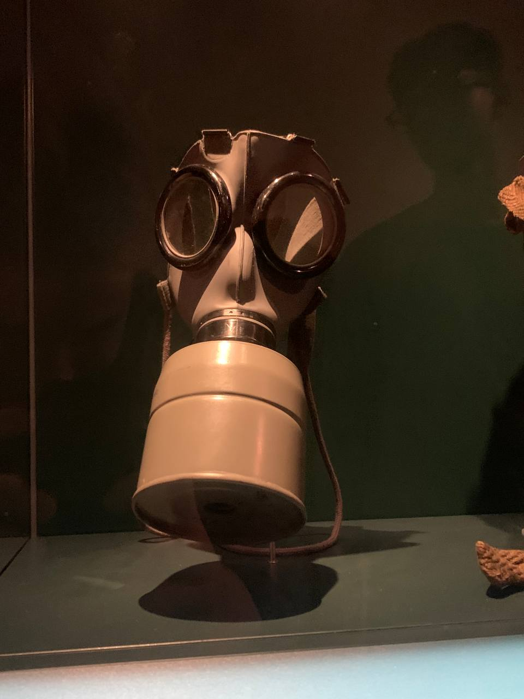

Invalides, Napoleone e Liberazione
Un viaggio attraverso la storia, la memoria e l'arte militare
Dettagli dei Monumenti
Scopri la ricchezza storica e artistica dei nostri luoghi
Les Invalides
Hôtel des Invalides




Storia e Significato
Les Invalides rappresenta uno dei complessi architettonici più significativi di Parigi. Costruito per volere di Luigi XIV nel 1670, questo maestoso edificio nacque dalla necessità di fornire assistenza ai veterani di guerra francesi. L'imponente architettura, caratterizzata dalla famosa cupola dorata, incarna la grandezza del Re Sole e del potere militare francese.
Il complesso si estende su una vasta area con una facciata di 196 metri e include 15 cortili, l'ospedale originale, il Musée de l'Armée, la tomba di Napoleone e la chiesa di Saint-Louis-des-Invalides. Ogni elemento architettonico racconta una storia di potere, arte e memoria collettiva.
Curiosità Storiche
La Cupola Dorata
Contiene 12,65 kg di foglia d'oro puro, applicata in 550.000 fogli ultra-sottili (0,2 micron di spessore)
Capacità Originale
Poteva ospitare fino a 4.000 veterani di guerra contemporaneamente
Tempo di Costruzione
Completato in soli 6 anni, un record per l'epoca
Tomba di Napoleone
Dôme des Invalides




Il Mausoleo dell'Imperatore
La tomba di Napoleone Bonaparte rappresenta uno dei capolavori dell'architettura funeraria mondiale. Progettata da Louis Visconti, quest'opera d'arte monumentale ospita i resti dell'Imperatore in un massiccio sarcofago di quarzite rossa, posizionato al centro di una cripta circolare di straordinaria bellezza.
Il disegno architettonico riflette la grandezza e l'ambizione di Napoleone, con una struttura che evoca sia la maestà imperiale che l'innovazione tecnica. La cripta, accessibile attraverso una scalinata monumentale, crea un'atmosfera di sacralità e rispetto che onora la memoria di una delle figure più influenti della storia europea.
Dettagli Tecnici
Dimensioni
4 metri di lunghezza, 2 metri di larghezza
Materiale
Quarzite rossa Shoksha dalla Carelia russa
Bare Annidate
Sei bare: stagno, mogano, piombo, mogano, ebano e quarzite
Musée de l'Armée
Museo Nazionale dell'Esercito




Una Collezione Straordinaria
Il Musée de l'Armée ospita una delle collezioni militari più ricche e complete al mondo, con oltre 500.000 oggetti che raccontano l'evoluzione dell'arte della guerra dal Medioevo ai giorni nostri. La collezione include armature medievali, armi da fuoco storiche, uniformi, bandiere, documenti e opere d'arte militari di inestimabile valore.
Il museo è organizzato in sezioni tematiche che permettono ai visitatori di esplorare diversi periodi storici e aspetti della vita militare. Dalle armature dei cavalieri medievali alle uniformi della Grande Guerra, ogni oggetto racconta una storia di coraggio, innovazione e sacrificio.
Pezzi Unici
Armatura di Francesco I
Armatura completa del re di Francia del XVI secolo
Cavallo di Napoleone
Vizir, il cavallo preferito dell'Imperatore
Bandiere Storiche
Oltre 1.000 bandiere e stendardi storici
Musée de la Libération
Leclerc & Moulin




Storie di Coraggio e Libertà
Il Musée de la Libération è dedicato alla memoria del Generale Philippe Leclerc de Hauteclocque e di Jean Moulin, due figure emblematiche della Resistenza francese. Il museo racconta le loro straordinarie storie attraverso documenti originali, fotografie, oggetti personali e testimonianze che permettono ai visitatori di rivivere uno dei periodi più drammatici e gloriosi della storia francese.
L'esposizione permanente esplora non solo le gesta militari e politiche di questi due eroi, ma anche il contesto sociale e culturale dell'epoca, offrendo una visione completa della Francia durante l'occupazione nazista e la lotta per la liberazione.
Viaggio Emotivo
Jean Moulin e la Resistenza
Prefetto, unificò i movimenti della Resistenza francese e fu il primo presidente del Consiglio Nazionale della Resistenza (maggio 1943). Arrestato dalla Gestapo a Caluire, morì sotto tortura nel luglio 1943. Le ceneri sono al Pantheon di Parigi.
Cimeli di Leclerc
Bastone da passeggio, burnus marocchino e documenti d'identità britannici
Documenti Originali
Lettere e telegrammi autentici
Il Nostro Itinerario
Programma dettagliato per il quarto giorno
Partenza — B&B HOTEL
4 Rue Emile Reynaud, 75019 Parigi
Metro per Les Invalides
Linea 8, 13 - Stazione Invalides
Trasferimento
Verso il Musée de la Libération
Ritorno in hotel
Trasferimento in metro
Informazioni Pratiche
Musée de l'Armée & Les Invalides
Include la Tomba di Napoleone129 Rue de Grenelle, 75007
Linea 8, 13 (Invalides)
€17 • €12 ridotto • Gratis <18
Giornaliero 10:00 - 18:00
Musée de la Libération
Ingresso Gratuito4 Avenue du Colonel Henri Rol-Tanguy, 75014
Linea 4, 6 (Denfert-Rochereau)
Gratuito per tutti
Mar - Dom 10:00 - 18:00